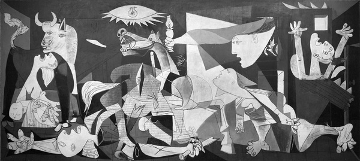

Pablo Picasso was born on October 25th, 1881, in Málaga, Spain. Picasso studied art briefly in Madrid in 1897, then in Barcelona in 1899. In Barcelona, he became closely associated with a group of modernist poets, writers, and artists.
Living in both Paris and Spain until 1904, his work during these years suggests feelings of desolation and darkness inspired in part by the suicide of his friend Casagemas. Picasso’s paintings from late 1901 to about the middle of 1904 are referred to as his Blue Period, and depict themes of poverty, loneliness, and despair.
Picasso fully moved to Paris in 1904 and settled in the artist quarter Bateau-Lavoir, where he lived among bohemian poets and writers. From 1905, Picasso directed his attention toward more pleasant themes such as carnival performers, harlequins, and clowns. In this painting, he used his own image for the harlequin figure and abandoned the daunting blues in favor of vivid hues like red to celebrate the lives of circus performers. These years were labeled his Rose Period.
After World War I, Picasso reverted to traditional styles, and experimenting with Cubism. In the early 1920s, he devised a unique variant of classicism using mythological creatures such as centaurs, minotaurs, nymphs, and fauns inspired by the classical world of Italy. He had his first child in 1921, and some of his works were inspired by fatherhood because of it.
By the early 1930s, Picasso had changed his style yet again, and started using colors that blended well together. Although still living in France in the 1930s, Picasso was deeply distraught over the outbreak of the Spanish Civil War in 1936. In one of his most famous paintings, Guernica, he shows the tragedy and suffering of war. From the late 1940s through the 1960s, Picasso’s creative energy keps going. Living in the south of France, he continued to paint, make ceramics, and experiment with printmaking. His international fame increased with large exhibitions in London, Venice, and Paris, and even Tokyo. In the picture Faun With Stars, Picasso symbolized himself as a calm, confident faun. The picture embraces his love for his wife, Jacqueline.
Even into his eighties and nineties, Picasso produced an enormous amount of works. He died on April 8, 1973 due to heart failure. Over his 91 years,he had created over 20,000 paintings, prints, drawings, sculptures, ceramics, theater sets and costumes. His creative styles range from Realism to Abstraction and everywhere in between. Some other art genres he heavily impacted were Cubism, Neoclassicism, Surrealism, and Expressionism. Picasso left an artistic legacy that continues to resonate throughout the world today.